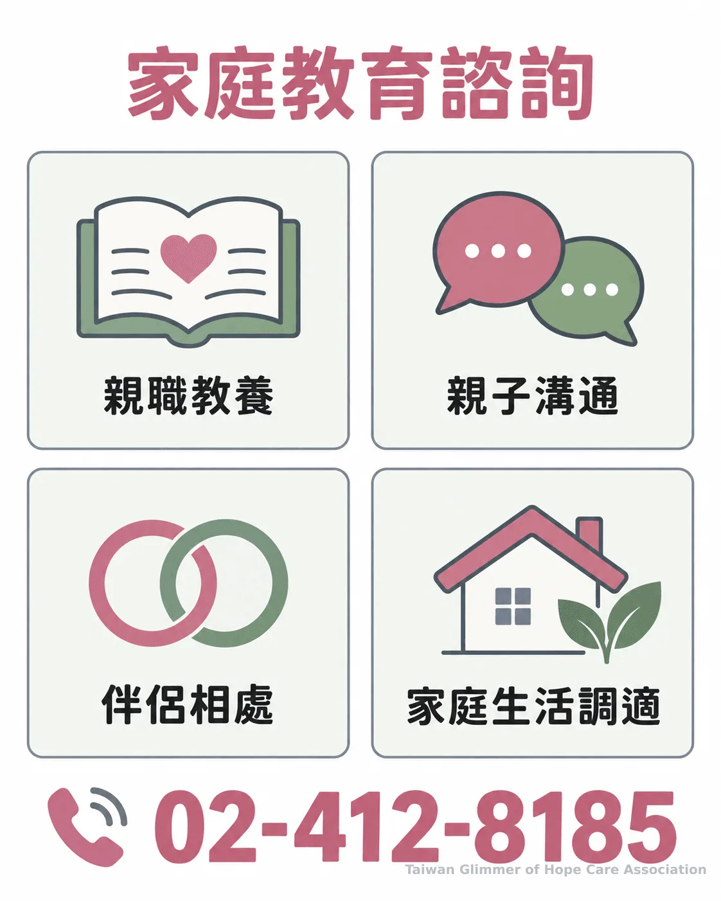
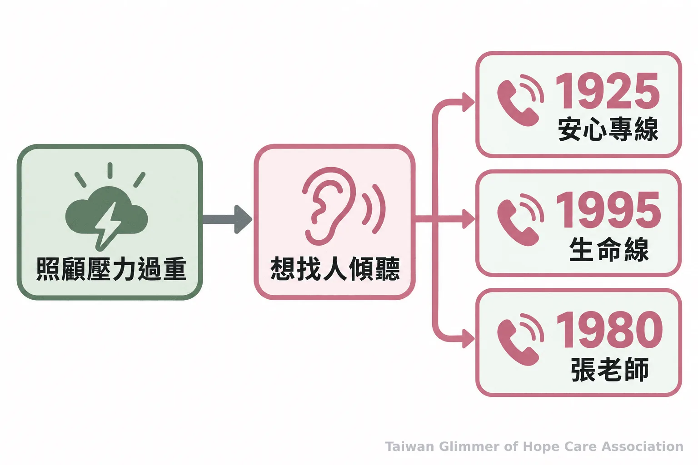

育兒壓力求助指南：4類親職與家庭支持資源
育兒壓力大時，可依照照護、親職、福利或情緒需求，聯絡孕產兒關懷專線、家庭教育諮詢專線、社福中心與心理支持專線。
育兒壓力常同時牽涉孩子照護、親子溝通、家庭開支與照顧者情緒，家長不必等到問題變得嚴重才開口求助。先想想眼前最需要哪一種協助，再選擇對應的求助專線或在地服務；若一時說不清楚，也可以先告訴接線人員目前最困擾的事與居住縣市，請對方協助釐清方向。
孕產或嬰幼兒照護問題，可先詢問國民健康署
孕期、產後、哺乳或嬰幼兒照護疑問，可撥國民健康署孕產兒關懷諮詢服務專線 0800-870-870。服務人員可提供健康知識、心理支持或社會資源資訊，個別症狀仍應向醫療專業人員詢問。
這支專線適合遇到孕期身心變化、產後情緒調適、哺乳技巧或育兒壓力的家庭。衛生福利部國民健康署說明，服務也提供孕產及育兒階段相關資訊。若問題牽涉孩子正在出現的疾病症狀、用藥或急迫醫療狀況，請聯絡醫療院所或緊急服務，不要只依一般諮詢作判斷。
親子溝通與教養困難，可聯絡家庭教育中心
親職教養、親子關係、伴侶相處或家庭生活調適，可撥全國家庭教育諮詢專線 412-8185；手機請加 02，撥 02-412-8185。教育部家庭教育資源網列明，諮詢不另收費，但電話費仍依電信方案計算。
家長可以把正在發生的溝通困境說出來，例如管教方式難以協調、孩子進入不同成長階段後不知道如何互動，或家人之間常為照顧分工起衝突。專線可提供家庭教育諮詢，也可查詢各縣市家庭教育中心的聯絡資訊。各縣市與專線的服務公告可能調整，聯絡前可先查看教育部家庭教育資源網的最新資訊。

多項生活需求交錯，可找社福中心或撥 1957
若家庭同時面對經濟、托育、照顧或家庭變故等難題，可聯絡所在地社會福利服務中心；想先詢問福利資訊，可撥 1957 福利諮詢專線。社福中心會依家庭需要評估，提供協助或連結適合的資源。
社會福利服務中心的服務包含經濟與急難扶助資訊、育兒指導、親職教育、家庭關係協助，以及諮商或心理支持資源的連結。服務不只面向單一身分或特定困境；當生活中的幾件事互相牽動，家長可以先說明整體狀況，再由社工與家庭一起確認可行的下一步。各地中心位置與聯絡方式，可到縣市政府社會局（處）網站查詢。1957則可先協助了解福利資源與轉介方向，補助資格仍須由主管機關依規定審核。
「依據民眾的問題，整體性評估家庭的問題，依據需求提供協助或協助資源連結。」— 衛生福利部社會及家庭署
求助時不必先判斷自己符合哪一項補助；把實際遇到的困難說清楚，服務人員才能協助找方向。
情緒壓力需要傾聽時，可使用心理支持專線
若主要需要是有人傾聽情緒，可撥 1925 安心專線、1995 生命線或 1980 張老師。若擔心自己或他人正處於立即危險，請直接聯絡 110 或前往急診。
長時間焦慮、低落、睡不好，或感到照顧責任已超出負荷，都可以成為求助的理由。照顧者也能詢問所在地衛生局或社區心理衛生中心，了解後續支持方式。求助不需要等到能完整描述原因，從「我最近很累，想找人談談」開始就可以。

- 寫下目前最困擾的一件事，以及家庭所在地。
- 依需求聯絡相應專線；多項問題交錯時，可先詢問 1957 或所在地社福中心。
- 若涉及兒少保護疑慮，撥 113 保護專線；緊急狀況撥 110。
- 孕產及嬰幼兒照護：0800-870-870。
- 親職諮詢與家庭溝通：412-8185，手機加 02。
- 福利資訊與資源連結：1957 或所在地社福中心。
- 情緒支持：1925、1995、1980；立即危險撥 110。
常見問題
先依照需求選擇專線；不確定時，說明目前的困難與所在地，請服務人員協助判斷。
常見問題
Q1：412-8185 用手機要怎麼撥？
手機請加 02，撥打 02-412-8185。諮詢不另收費，但通話仍會依電信方案計費。
Q2：社福中心只服務經濟弱勢家庭嗎？
不只如此。中心會依家庭需求評估，服務範圍包含育兒指導、親職教育、家庭關係及福利資源連結等。
Q3：1957 和社福中心有什麼不同？
1957 可先提供福利資訊與轉介方向；所在地社福中心則能依家庭狀況進一步評估並協助連結資源。
Q4：育兒諮詢專線可以代替看醫生嗎？
不可以。孕產兒關懷專線提供一般健康知識、支持與資源資訊；個別症狀、診斷或治療問題應詢問醫療專業人員。
Q5：擔心孩子安全或遇到緊急狀況該怎麼辦？
疑似兒少受不當對待，可撥 113 保護專線；有立即危險時撥 110。一般育兒諮詢不能取代保護通報或緊急救援。
好好當家長｜系列三之 3
若今天只能做一件事，可以先選出最需要處理的問題，打給相應的資源詢問。身邊大人知道去哪裡求助、如何把支持接上，能讓孩子與家庭更快找到合適的協助。疑似兒少受不當對待可撥 113 保護專線，緊急狀況撥 110。
參考資料
- 衛生福利部（2025）。新手爸媽「最常問這3題」！4管道解答。
- 衛生福利部社會及家庭署（2019）。社會福利服務中心提供甚麼服務呢？。
- 教育部家庭教育資源網。全國家庭教育諮詢專線簡介。
- 衛生福利部心理健康司。全國諮詢及救援服務專線。
- 衛生福利部社會救助及社工司。1957福利諮詢專線服務時間為每日上午8點至晚上10點，全年服務不間斷。
本文同步刊於 appi.news。